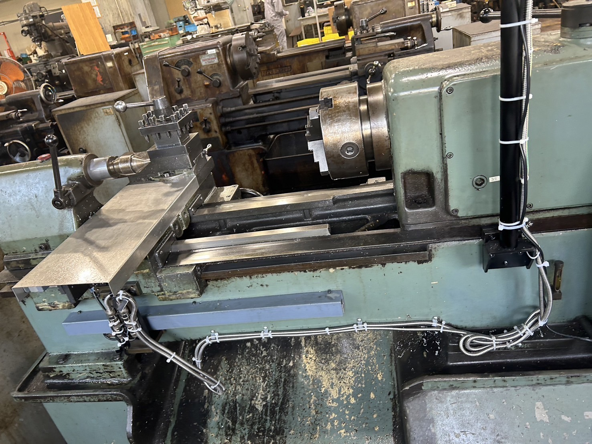
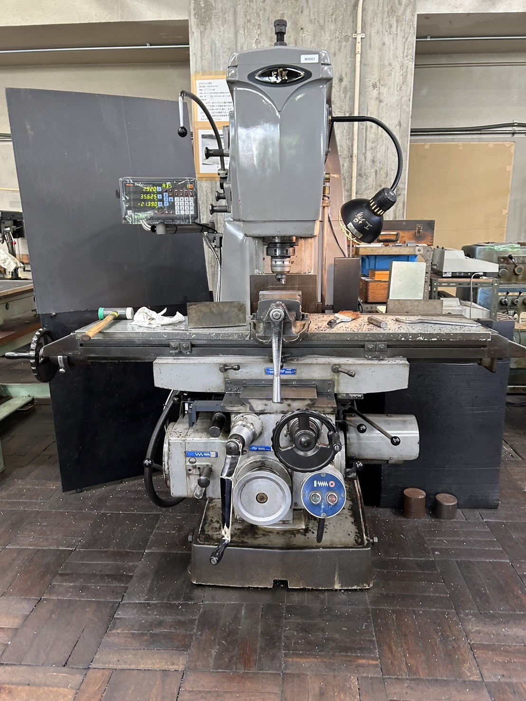
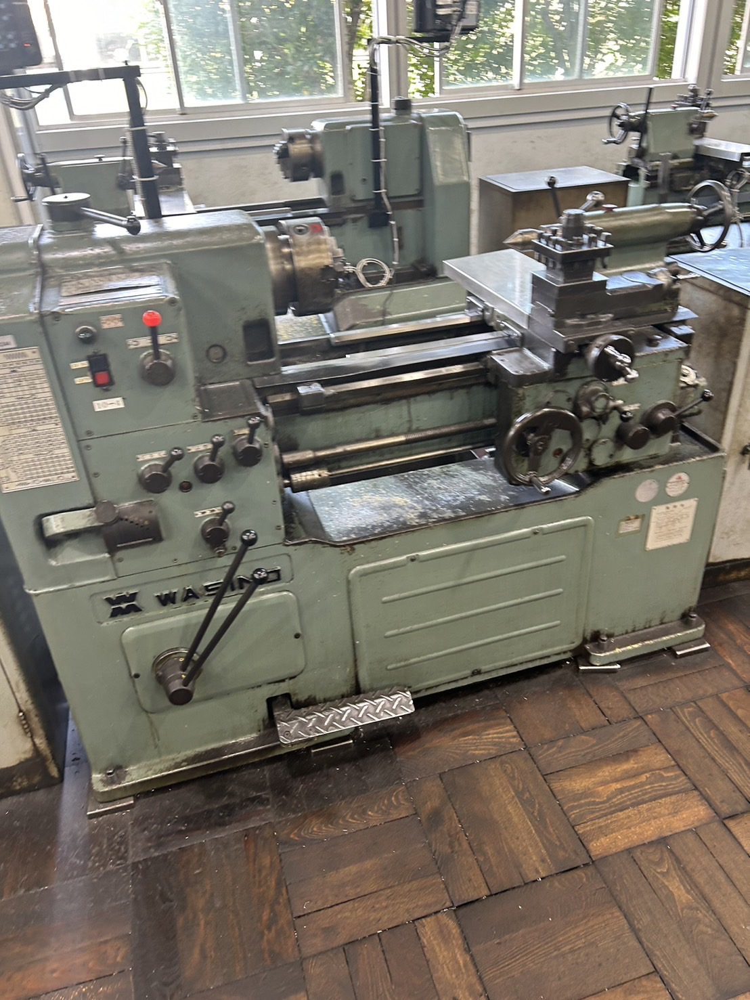

コース紹介
エネルギー機械コース（通称Mコース）では、 ・輸送機械や発電所等の産業インフラの設計と運用に必要な技術 ・水素エネルギー等のクリーンエネルギーの創生と貯蔵に関する技術 ・自然災害の予測分析や対策に関する技術 これらを教育課程の特色とし、人のより良い暮らしと環境との共生を実現する技術者の育成を目指します。
教育課程の編成方針
機械設計系、エネルギー系および計測制御系からなる機械工学とエネルギー工学関連の知識と技術について、工学的な基礎知識から産業への応用までを視野に入れて体系的・効率的に修得できる講義科目を配置します。また、講義科目で学んだ知識と技術について理解を深化・定着させるとともに、それを活用した実践的な設計、製作、解析および評価を他者と協働して取り組む経験と能力を養うために実験実習科目を配置します。
修得すべき知識と技術
・エネルギー創出システムをはじめとする機械をシミュレーションや工作機械により設計・製作し、その機能や性能を検証する実践的能力 ・機械設計系、エネルギー系および計測制御系からなる機械工学関連の専門知識
専門科目
専門科目では、以下のような分野に重点を置いています：
| 学年 | 科目名 |
|---|---|
| ２年次 | 機械工学概論 基礎製図 電気電子回路 シーケンス制御 機械工作実習1 |
| ３年次 | 材料力学入門 熱力学入門 流体力学入門 機械工作法 CAD製図 機械設計製図 機械工作実習2 |
| ４年次 | 材料力学 熱力学 流れ学 機械力学 材料学 数値計算 エネルギー機械実験1 |
| ５年次 | 機械設計 伝熱工学 流体工学 生産加工工学 制御工学 エネルギー変換工学 エネルギー機械実験2 卒業研究 |
施設・設備
実験実習で使われる実習室・機械を紹介します。
 